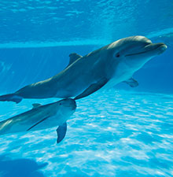
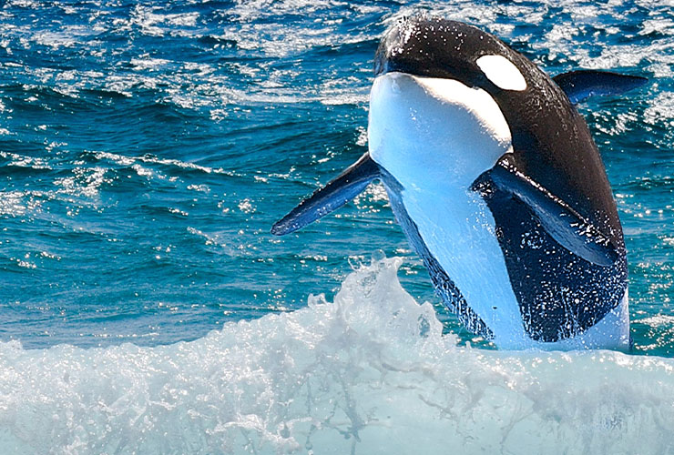
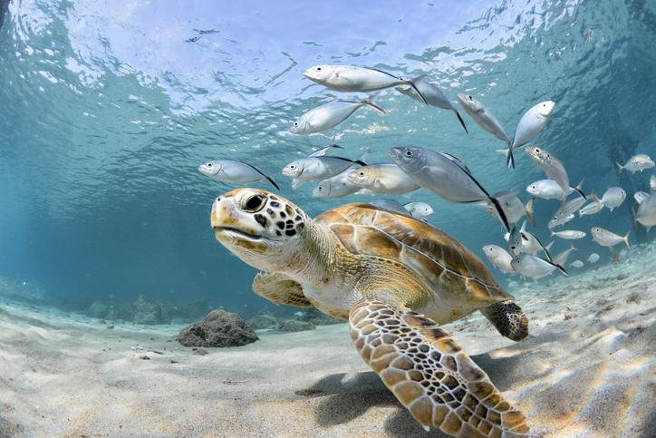

Los animales marinos son organismos que viven total o parcialmente en mares y oceanos. Estos seres vivos forman parte de ecosistemas acuaticos muy complejos y variados, donde cada especie cumple una función importante para mantener el equilibrio natural. Los oceanos cubren aproximadamente el 70% de la superficie terrestre, por lo que la vida marina representa una gran parte de la biodiversidad del planeta.
La fauna marina incluye animales de diferentes tamaños, formas y caracteristicas. Existen especies microscopicas, como el plancton, y otras gigantescas, como la ballena azul, considerada el animal mas grande del mundo. A lo largo del tiempo, los animales marinos han desarrollado adaptaciones especiales para sobrevivir en el agua salada.
Los animales marinos pueden clasificarse de distintas maneras: por su estructura corporal, su alimentacion, el lugar donde habitan y su forma de desplazarse. Además, desempeñan funciones esenciales dentro de las cadenas alimenticias y el equilibrio ecológico.
Sin embargo, actualmente la vida marina enfrenta grandes amenazas, como la contaminacion de los oceanos, la pesca excesiva y el cambio climatico. Por ello, es importante conocer y valorar la importancia de los animales marinos para fomentar su protección y conservación.



FRIDA CANDELARIA ROBLES CABALLERO 23BP05 - 2954